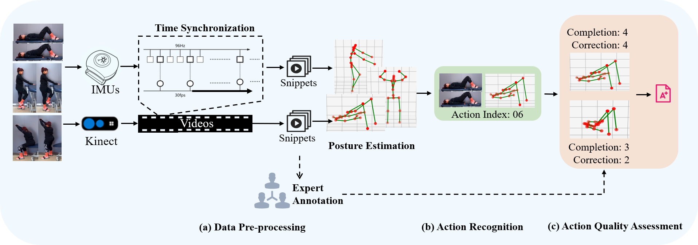

1 School of Sports Engineering, Beijing Sport University, China
2 Department of Neurorehabilitation, Rehabilitation Research Center, China
The assessment of rehabilitation exercises for neurological and musculoskeletal disorders are crucial for recovery.
Traditionally, assessment methods have been subjective, with inherent uncertainty and limitations. This paper
introduces a novel multi-modality dataset named FineRehab to prompt the study of rehabilitation movement analysis,
leveraging advancements in sensor technology and artificial intelligence. FineRehab collects 16 actions from 50
participants, including both patients with musculoskeletal disorders and healthy individuals, and consists of
4,215 action samples captured by two Kinect cameras and 17 IMUs. To benchmark FineRehab, we present a reliable
approach to analyze rehabilitation exercises, and make experiments to evaluate the comprehensive movement quality
from across multi-dimensions. Comparative experimental analyses have verified the validity of our dataset in
distinguishing between the movement of the normal population and patients, which can offer a quantifiable basis
for personalized rehabilitation feedback. The introduction of FineRehab will encourage researchers to apply,
develop and adapt various methods for rehabilitation exercise analysis.

The FineRehab dataset will be released soon.